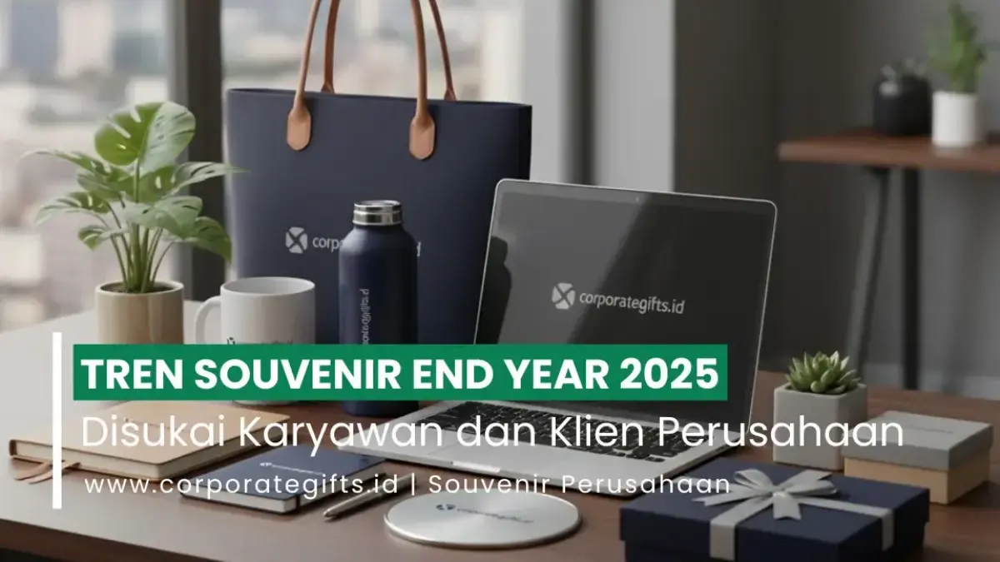

Corporate Gifts ID - Tren souvenir end year 2026 yang paling disukai perusahaan adalah kombinasi produk digital fungsional (power bank, wireless charger), barang ramah lingkungan (tumbler stainless, tote bag daur ulang), souvenir personal, hampers tematik, dan produk UMKM lokal. Kelima kelompok cenderamata ini dipilih karena sangat berguna dalam rutinitas kerja harian, membawa pesan keberlanjutan yang kuat, dan memperkokoh citra reputasi korporat di mata karyawan internal maupun jajaran klien strategis.
Jika satu dekade lalu bingkisan tutup tahun identik dengan kalender dinding konvensional atau cangkir keramik berlogo standar, kini lanskap industri cenderamata telah bergeser secara fundamental. Perusahaan modern memandang apresiasi akhir tahun sebagai instrumen komunikasi strategis untuk mempererat loyalitas, merayakan pencapaian target bersama, dan menanamkan kesan profesional jangka panjang.
Poin Kunci Tren Souvenir End Year Korporat:
- Evolusi ke Arah Utilitas Tinggi: Hadiah bergeser dari sekadar pajangan meja menuju gawai cerdas pendukung mobilitas kerja fleksibel (hybrid working).
- Standar Hijau Berkelanjutan (ESG): Penggunaan material bambu lestari, kain rami alami, dan stainless steel bebas BPA kian menjadi standar wajib pengadaan korporasi besar.
- Sentuhan Personalisasi Emosional: Laser engraving nama penerima pada aksesori kulit atau pulpen metal meningkatkan rasa memiliki dan kebanggaan individu.
- Pengalaman Unboxing Tematik: Kemasan hardbox premium dengan pita satin dan kartu pesan refleksi akhir tahun menciptakan kenangan emosional tak terlupakan.
Mengapa Tren Souvenir End Year Terus Berkembang?
Karyawan dan mitra bisnis saat ini mengharapkan hadiah yang memiliki makna mendalam, fungsi praktis, serta keselarasan dengan nilai-nilai etika perusahaan. Beberapa faktor pendorong utama evolusi tren cenderamata tutup tahun meliputi:
- Perubahan Gaya Hidup Digital: Tingginya ketergantungan pada gawai membuat aksesori elektronik portabel selalu menjadi barang idaman yang dipakai setiap hari.
- Tanggung Jawab Sosial & Lingkungan: Dorongan penerapan prinsip Corporate Social Responsibility (CSR) dan ESG memicu preferensi kuat terhadap produk ramah lingkungan.
- Kebutuhan Apresiasi yang Otentik: Personalisasi membuktikan bahwa manajemen benar-benar meluangkan waktu dan perhatian tulus untuk mengapresiasi kontribusi spesifik masing-masing individu.
Dengan menyelaraskan konsep bingkisan terhadap dinamika tersebut, perusahaan dapat merancang inspirasi souvenir end year eksklusif yang tidak hanya elok secara visual, tetapi juga sarat nilai simbolis yang membekas.
Ringkasan 8 Tren Souvenir End Year 2026
Berikut rangkuman delapan arus tren cenderamata penutupan tahun yang menjadi rujukan utama manajemen HR dan divisi pengadaan B2B:
| Kategori Tren | Contoh Produk Populer | Keunggulan & Nilai Branding |
|---|---|---|
| 1. Souvenir Digital | Power bank nirkabel, wireless fast charger, speaker Bluetooth | Sangat relevan dengan gaya hidup mobile dan mencerminkan citra inovatif |
| 2. Eco-Friendly Gift | Tumbler stainless vacuum, tote bag kanvas daur ulang, notes bambu | Memperkuat reputasi perusahaan yang peduli kelestarian bumi dan standar ESG |
| 3. Premium Personal | Notebook kulit deboss nama, pulpen logam ukir laser grafir | Membangun kedekatan emosional mendalam dan rasa bangga bagi penerima |
| 4. Hampers Tematik | Paket wellness relax & recharge, artisan coffee drip set | Menghadirkan pengalaman unboxing multisensori yang mewah dan berkesan |
| 5. Utilitas Sehari-hari | Payung lipat otomatis anti-angin, ransel laptop tahan air, mug insulasi | Digunakan setiap hari di ruang publik sehingga eksposur logo sangat awet |
| 6. Nilai Budaya Perusahaan | Desk decor arsitektural, kalender kayu modular, custom enamel pin | Merefleksikan visi, misi, dan identitas budaya organisasi secara otentik |
| 7. Bundling Bonus Tahunan | Voucher belanja premium, kartu e-money custom berlogo korporat | Memberikan penghargaan finansial nyata yang dibalut cenderamata elegan |
| 8. Kolaborasi UMKM | Batik motif kontemporer mini frame, cangkir gerabah keramik lokal | Mendukung pertumbuhan ekonomi kreatif lokal dengan sentuhan kearifan Nusantara |
1. Souvenir Digital dan Teknologi Modern
Gawai nirkabel dan perangkat elektronik ringkas konsisten menduduki puncak daftar permintaan cenderamata korporat. Power bank berkapasitas besar dengan fitur magnetic wireless charging, dudukan pengisi daya ponsel meja kerja, serta speaker mini dengan kualitas audio jernih sangat digemari karena mempermudah aktivitas kerja harian.
Selain nilai guna tingginya, pemberian perangkat teknologi menyematkan impresi bahwa instansi Anda merupakan organisasi yang tanggap teknologi, modern, dan selalu selangkah lebih maju.
2. Produk Ramah Lingkungan (Eco-Friendly Corporate Gift)
Kesadaran terhadap krisis iklim telah mendorong korporasi besar beralih dari barang sekali pakai berbahan plastik sintetis menuju produk ramah lingkungan. Tumbler berbahan baja tahan karat (stainless steel food grade), sedotan titanium, tas belanja jinjing kanvas daur ulang, serta peranti tulis dari serat gandum atau bambu organik kini menjadi simbol prestise baru.
Penerima merasa bangga membawa barang yang mencerminkan tanggung jawab ekologis, sementara perusahaan berhasil mengomunikasikan kepedulian sosial secara konkrit.

Kombinasi tumbler stainless steel tahan suhu, notebook kulit berlogo grafir, dan hardbox bertekstur mewah.
3. Souvenir Premium dengan Personalisasi Eksklusif
Personalisasi tetap memegang peranan krusial dalam menciptakan hubungan interpersonal yang hangat. Di tahun 2026, teknik personalisasi berkembang melampaui sekadar pembubuhan logo instansi: penyertaan inisial nama penerima, ukiran pesan motivasi khusus, hingga sertifikat apresiasi personal yang ditandatangani jajaran direksi.
Buku agenda bersampul kulit asli dengan emboss foil emas nama pejabat atau pulpen berbobot mantap dengan ukiran laser nama manajer menjadi cenderamata berharga yang akan disimpan rapi di meja kerja selama bertahun-tahun.
4. Paket Hampers Perusahaan yang Elegan & Tematik
Tradisi mengirimkan bingkisan penutup tahun kini berevolusi menjadi hampers akhir tahun tematik yang mengutamakan relaksasi dan kesehatan holistik. Beberapa konsep hampers yang paling banyak dipesan mencakup:
- Paket Wellness "Relax & Recharge": Berisi lilin aromaterapi berbahan soy wax alami, diffuser aromatik, teh herbal organik penenang pikiran, dan cangkir keramik buatan tangan.
- Paket Eksekutif "Artisan Coffee": Terdiri dari biji kopi sangrai khas Nusantara, manual coffee dripper, tumbler insulasi vakum, serta camilan kue kering bebas gula.
5. Merchandise Fungsional untuk Aktivitas Sehari-hari
Prinsip utilitas tetap menjadi fondasi utama pemilihan hadiah. Barang-barang penunjang mobilitas seperti ransel laptop ergonomis tahan air, payung lipat kanopi ganda yang tahan hembusan angin kencang, serta wadah bekal kedap udara bermaterial kaca borosilikat selalu dinilai tinggi oleh para pekerja.
Setiap kali barang tersebut digunakan di commuter line, ruang tunggu bandara, atau saat rapat di kantor klien, logo perusahaan Anda terpampang secara wajar dan berkelanjutan.
6. Souvenir Kantor yang Mewakili Budaya Perusahaan
Cenderamata yang berbobot mampu merepresentasikan filosofi organisasi:
- Industri Startup & Agensi Kreatif: Lebih menyukai merchandise berpulasan warna pop, hiasan meja artistik, dan hoodie berdesain kasual minimalis.
- Institusi Finansial & Hukum: Cenderung memilih gift set berpalet warna netral elegan, map dokumen berbahan kulit mewah, dan pulpen beraksen krom perak.
- Sektor Manufaktur & Konstruksi: Memilih perkakas serbaguna (multitool stainless), lampu senter LED darurat, dan ransel lapangan berdaya tahan tinggi.
7. Kombinasi Souvenir dan Bonus Tahunan
Praktik cerdas yang kian marak diterapkan divisi HR adalah mengemas surat keputusan bonus performa tahunan bersama cenderamata fisik eksklusif. Menyelipkan kartu saldo e-wallet kustom atau voucher belanja gaya hidup di dalam kompartemen dompet kartu berlogo perusahaan memberikan pengalaman penghargaan berlapis yang sangat menyentuh hati karyawan.
8. Souvenir Lokal dan Kolaborasi UMKM Kreatif
Mendukung para perajin lokal kini menjadi strategi branding kebanggaan nasional yang bergengsi. Kolaborasi bersama pengrajin tenun lurik, perajin kayu jati Jepara, atau perajin anyaman bambu menghasilkan suvenir yang memiliki cerita, jiwa, dan karakter kultural yang sangat unik bagi kolega bisnis internasional.
Tips Memilih Souvenir End Year 2026 yang Tepat
Untuk memastikan anggaran pengadaan akhir tahun instansi Anda dialokasikan secara efektif dengan tingkat kepuasan penerima maksimal, terapkan empat langkah strategis berikut:
- Segmentasikan Demografi Penerima: Bedakan tingkatan bingkisan untuk staf internal, mitra kerja operasional, dan pemangku kepentingan tingkat eksekutif VIP.
- Kawal Konsistensi Pedoman Brand (Brand Guidelines): Pastikan kode warna korporat (Pantone/CMYK) dan proporsi logo diaplikasikan secara presisi pada setiap medium material.
- Amankan Waktu Produksi (Buffer Time): Lakukan pemesanan resmi paling lambat 4 hingga 6 pekan sebelum tanggal pelaksanaan acara tutup tahun guna mengantisipasi kepadatan antrean produksi workshop dan kargo pengiriman.
- Sisipkan Kartu Ucapan Bermakna: Tambahkan kartu ucapan refleksi apresiasi yang mencantumkan pesan penghargaan hangat dari pucuk pimpinan perusahaan.
Kesimpulan: Apresiasi Akhir Tahun yang Berkesan
Pemberian souvenir end year merupakan momentum emas untuk menutup tahun kalender fiskal dengan catatan kebersamaan yang manis. Dengan mengadopsi perpaduan antara fungsi teknologi, kepedulian lingkungan, dan sentuhan personalisasi, perusahaan Anda tidak sekadar membagikan cinderamata, melainkan menanamkan investasi emosional yang memperkuat loyalitas kemitraan di tahun-tahun mendatang.
Rencanakan pengadaan cenderamata akhir tahun perusahaan Anda bersama Corporate Gifts ID. Tim spesialis kami siap membantu Anda mulai dari kurasi konsep tematik, penyediaan sampel fisik, hingga pengemasan gift box mewah yang siap didistribusikan ke seluruh penjuru Nusantara.
Pertanyaan Umum Seputar Souvenir End Year (FAQ)

Ditulis oleh: Arinda Zakia
Senior Corporate Gifting SpecialistSenior Corporate Gifting Specialist di CorporateGifts.ID dengan pengalaman lebih dari 8 tahun dalam kurasi bingkisan korporat, hampers akhir tahun, dan strategi merchandise promosi B2B untuk ratusan perusahaan ternama.
Lihat Profil Lengkap & Panduan Lainnya